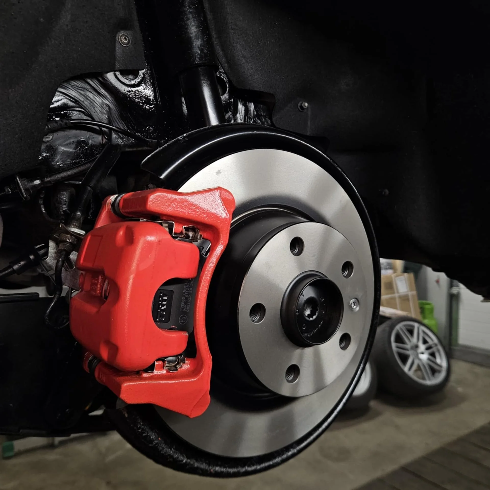

Ülevaatuseelne kontroll Tallinnas
Kontrollime samad sõlmed mis tehniline ülevaatus enne, kui sa sõidad ametliku kontrolli alla. Ebameeldivad üllatused tulevad meie boksis, mitte ülevaatusjaamas.
Millal seda kontrolli vaja
- Ülevaatus on lähinädalatel
- Eelmine ülevaatus jättis märkusi, mille parandus ei ole kindel
- Ostsid kasutatud auto ja tahad teada selle tegeliku seisu
- Müüd autot ja tahad olla aus ostjaga
- Auto on aastaid seisnud või vähe kasutatud
- Suvilavanad rehvid, õli, pidurid - kas need teevad ülevaatuse?
Mida me kontrollime
- Pidurid (kettad, klotsid, vedelik, käsipidur)
- Vedrustus, amortisaatorid, õhuvedrustus, vedrud
- Roolisüsteem, otsavardad, ristkardaan
- Tuled (kaug-, lähituled, suunatuled, piduri-, ohutuled, udutuled)
- Rehvid (muster, vanus, sümmeetria, sisemine kulumine)
- Heitgaaside süsteem (väljalask, summuti, katalüsaator, lambdaandur)
- Kere ja alusraami olukord, korrosioon kandvatel kohtadel
- Klaaside, klaasiklaaspesurite, klaasipuhastite töökindlus
Kuidas protsess käib
- Kirjelda autotRäägi mark, mudel, aasta, mis sind muretsema paneb.
- KontrollKäime läbi ülevaatuse nimekirja, märgime hinnangud.
- SelgitusRäägime, mis läbib, mis ei läbi, mida soovitame enne parandada.
- Parandus (valikuline)Kui soovid, paneme paika ka parandustööde plaani ja teostuse.

Kontakt ja asukoht
Aadress
Liivametsa tn 6-3
11216 Tallinn
Telefon
Lahtiolekuajad
Esmaspäev–reede 09:00–18:00